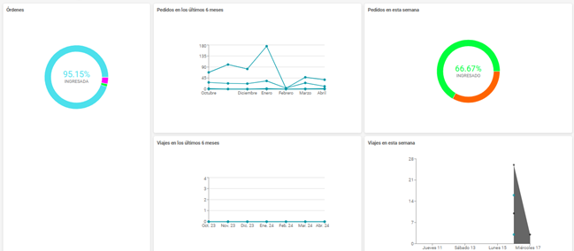
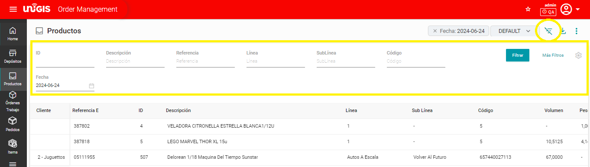
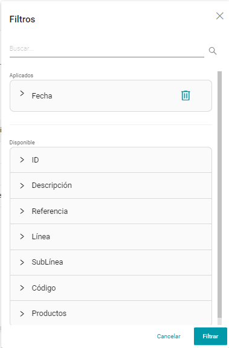
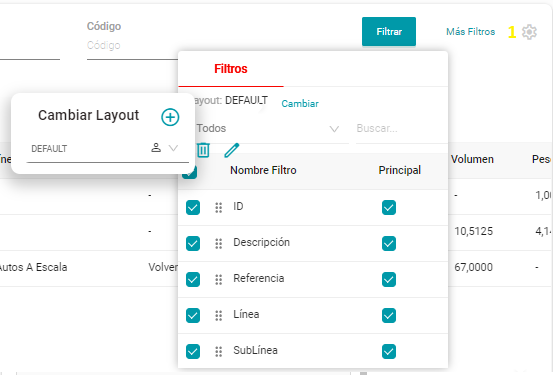
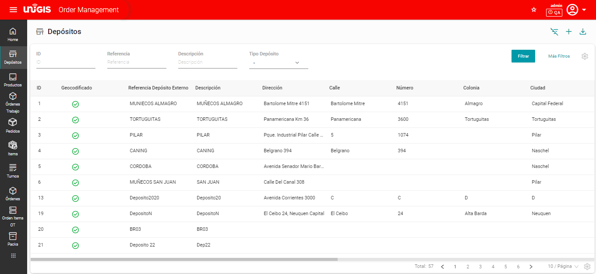
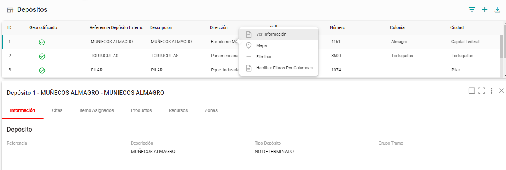
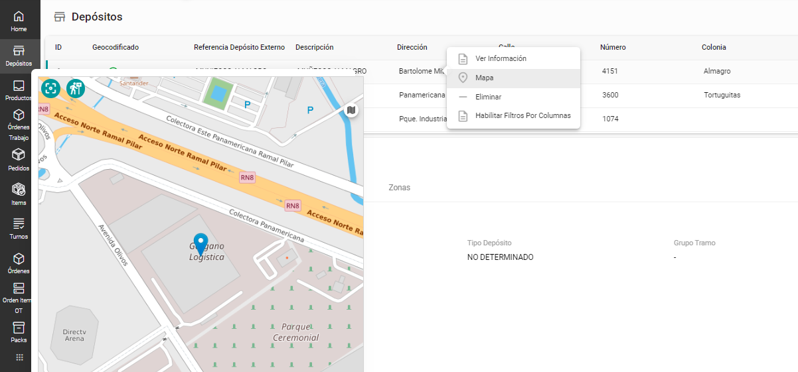
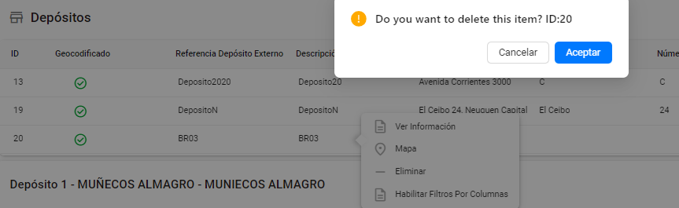
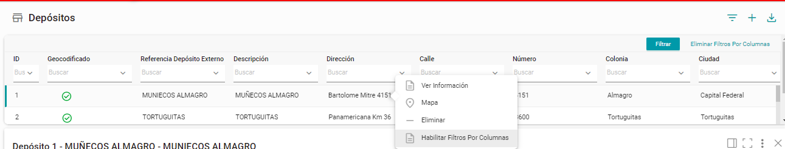
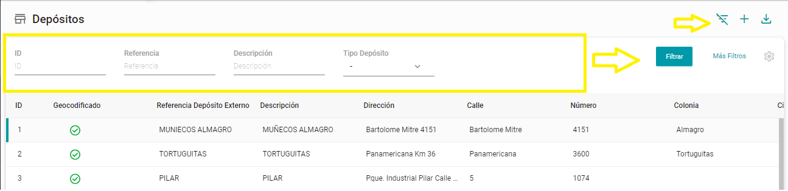

Adminitración de Pedidos#
Descripción#
La gestión de pedidos comienza cuando un cliente realiza un pedido y termina cuando recibe una entrega. El módulo Order Management (OM) en el TMS de UNIGIS, permite a una empresa coordinar todo el proceso de cumplimiento del pedido, desde la preparación del pedido, así como la gestión de flujos de estado y el control de la entrega hasta la disponibilidad del servicio.
Características y Beneficios#
Al completar esta guía se tiene como objetivo adquirir un conocimiento funcional del módulo.
Características:
Gestión de Pedidos Centralizada: Permite gestionar todos los pedidos desde una única plataforma, lo que simplifica el proceso y reduce la posibilidad de errores.
Información en Tiempo Real: Proporciona información en tiempo real sobre el estado de los pedidos, lo que permite a los usuarios monitorear el progreso y responder rápidamente a cualquier problema que surja.
Integración con Sistemas Externos: Se integra fácilmente con otros sistemas empresariales, como sistemas de inventario, CRM (Customer Relationship Management) y sistemas de facturación, lo que facilita el intercambio de datos y la automatización de tareas.
Personalización de Pedidos: Permite la gestión de los pedidos realizados por los clientes para obtener un seguimiento de las preferencias en futuras compras.
Automatización de Procesos: Automatiza tareas, como la generación de tarifas y el envío de confirmaciones de pedido, lo que ahorra tiempo y reduce los errores humanos.
Beneficios:
Eficiencia Operativa: Simplifica y agiliza el proceso de pedidos, lo que permite a la empresa procesar un mayor volumen de pedidos en menos tiempo.
Mejora de la Experiencia del Cliente: Proporciona una experiencia de seguimiento del pedido más fluida y satisfactoria al ofrecer actualizaciones en tiempo real sobre el estado de los pedidos y la capacidad de personalizar los pedidos según las preferencias del cliente.
Toma de Decisiones Informada: El módulo tiene un Smart Page que brinda gráficos generales informando la relación de pedidos, clientes y estatus de estos lo que permite a los líderes operativos una toma de decisión ágil en tiempo real.
Reducción de Errores: La automatización de procesos y la centralización de la gestión de pedidos ayudan a reducir los errores humanos, como los pedidos duplicados o los errores de entrega.
Mayor Rentabilidad: Al mejorar la eficiencia operativa y la satisfacción del cliente, un sistema de gestión de pedidos con dashboard puede ayudar a aumentar las ventas y la rentabilidad de la empresa.
Pantallas de Usuario#
Para acceder al menú de Gestión de Pedidos, es necesario otorgar permisos a usuarios o grupos para acceder al módulo, así como proporcionar un nombre de usuario y una contraseña válidos. Dentro del menú, se encuentran diversas funcionalidades que se describen en este documento, junto con su respectiva utilidad.
OM

Nota
Para habilitar el módulo es necesario con contar con permisos estos se solicitan a través del área de Servicios o bien si el usuario tiene perfil de administrador.
SmartPage (Home)#
En este submódulo podremos visualizar un Dashboard, es la forma más cómoda y práctica de presentar los datos para el entendimiento de personas técnicas y no técnicas, que permiten la visualización de la información de manera amigable y dinámica.
Como se muestra en la imagen anterior, podemos ver 5 gráficas las cuales se describirán de acuerdo con el título de cada recuadro:
Ordenes.
o En esta gráfica podremos observar las órdenes con los estados en los que se encuentra, de entre los cuales pueden ser: “Entregada”, “Ingresada”, “Planificada”.
Pedidos de los últimos 6 meses.
o Esta gráfica ilustra el número de pedidos realizados por cada cliente a lo largo de los últimos 6 meses.
Pedidos en esta semana.
o En esta gráfica se muestra el total de pedidos ingresados en la semana en curso, mostrándolas de acuerdo con el estado en el que se encuentran, por ejemplo: “Ingresada”, “Aprobado”, es decir se tiene el 66.67% de los pedidos ingresados, pero solo el 33.33% de los pedidos han sido aprobados.
Viajes en los últimos 6 meses.
o En esta gráfica se muestra la tendencia los viajes realizados en los últimos 6 meses por los Tipos de vehículos que se encuentren activos por parte del usuario, asimismo asignados a las entregas de las OT, Ordenes, Ítems.
Viajes esta semana.
o En esta gráfica se muestran los viajes realizados en la semana en curso, con los vehículos activos y que se encuentren en el desplazamiento del recorrido o que bien apenas comenzarán una vez cambiando el estado del pedido.
Funcionalidades Generales#
En cada submódulo se cuentan con botones que cumplen la misma función basado con la información respectiva a las columnas de cada listado a mostrar, estos botones y funcionalidades son:
Botón de Filtros.
Al dar clic en el botón de Filtros, en la parte superior derecha de la tabla de productos se mostrarán los filtros de: ID, Descripción, Referencia, Línea, Sublínea, Código, Fecha.
Al tener disponibles los filtros mencionados y en caso de que estos no le son de utilidad, podrá dar clic en el botón Más Filtros y de desplegará un modal para realizar una búsqueda más específica.
{kind=link}
Si se desea cambiar los filtros predeterminados, se deberá dar clic en el engrane que se encuentra a lado del botón Más Filtros, y se mostrará los filtros predeterminados y con la opción a Cambiar.
Exportar Listado de Productos.
Si se desea tener el listado de productos registrados y visibles en la tabla, se deberá dar clic en botón de exportar donde se preparará un archivo con todos los productos en formato “.xlsx”.
Modificar Stock.
Si se desea modificar el stock de los productos disponibles y visibles en la tabla se deberá dar clic en los tres botones que se encuentran a lado del botón “Importar”, y se abrirá un modal para realizar dicha modificación.
Depositos#
En este submódulo se mostrará un listado con todos los depósitos que hayan sido creados en el Adminstrador del TMS.
Para el caso donde se necesite ver información adicional, se deberá dar clic con el botón derecho del mouse, mostrando las siguientes opciones, Ver Información, Mapa, Eliminar, Habilitar Filtros por Columna.
Ver Información.
Al dar clic se mostrará información correspondiente al depósito, en la parte inferior del listado.
Mapa.
Al seleccionar la opción de mapa se abrirá un modal donde muestre la localización del depósito.
Eliminar
Al dar clic en esta opción arrojara un modal para eliminar el registro del depósito.
Habilitar filtros por Columna.
Se visualizará en el listado de productos, en cada columna campos de selección de acuerdo con el contenido de este y realizar un filtrado adicional.
En la parte superior derecha encontraremos 3 íconos “Filtros”, “Crear”, “Importar Depósitos”, a continuación, se describe la funcionalidad de cada uno:
Filtros
Al dar clic en el ícono de filtros se desplegará en la parte superior del listado de depósitos 4 campos para ser llenados:
o ID: Colocar el Id que se le dio al Deposito una vez creado y guardado.
o Referencia: Colocar la referencia externa con la que el usuario identifica el depósito creado.
o Descripción: Colocar la descripción especifica que se le dio al depósito.
o Tipo Depósito: Identificador del tipo de depósito que fue asignado en la creación de este.
Una vez finalizado los datos para realizar el filtro dar clic al botón Filtrar.
Para realizar un filtrado especifico y de más campos deberá darse clic al texto Más Filtros, donde al interactuar se abrirá un modal con todos los campos.